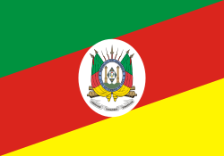

My name is Filipe. I was born in South of Brazil, Rio Grande do Sul and live with my family in Porto Alegre. I am currently working as an Uber driver. My children are my world and I love spending time with them. I love to play with kids on park and I love to learn new things.
About Me

Rio Grande do Sul, Brazil

Official Flag of Rio Grande do Sul
The state has strong European roots, especially from German and Italian immigrants, which can be seen in its architecture, cuisine, and traditions.
Chimarrão is a traditional drink made from yerba mate, symbolizing hospitality in the region. The famous churrasco (barbecue), cooked over open fire, is a cultural treasure in the state.
As the southernmost state of Brazil, Rio Grande do Sul has four distinct seasons. The Serra Gaúcha region, with cities like Gramado and Canela, attracts tourists with its cool weather and European atmosphere.